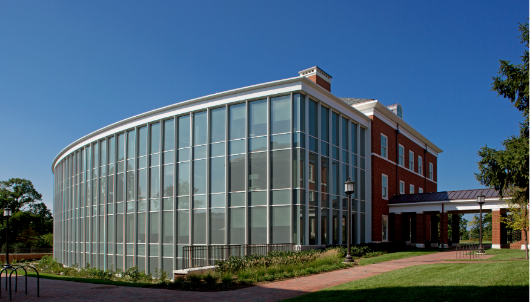
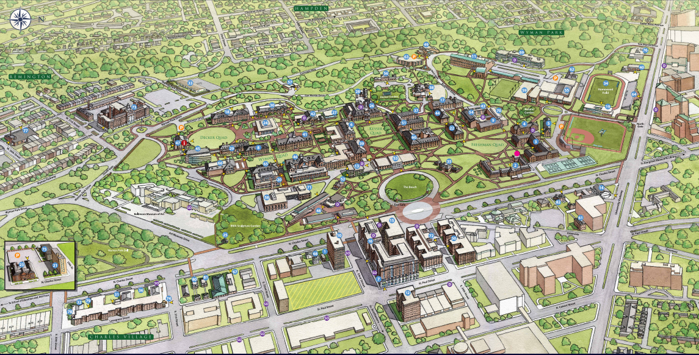

Applying to the Schatzlab
The Schatzlab is a highly interactive research group known for outstanding
research in computational biology. We are developing the computational models
and systems needed for understanding the causes of diseases, for developing
better foods and biofuels, and for unlocking the secrets of the processes of
life. This work depends on having a team of highly motivated postdocs, graduate
students, undergraduate students, and bioinformatics engineers to explore all the different facets of
these challenges. We will work together to establish and execute a premier
research program in computational biology through the entire research life
cycle: selecting research topics, establishing milestones, developing software
and methods, analyzing data, writing papers & presenting your work. As you
mature in the lab, you will be expected to take on more independence &
responsibility so that you will be well prepared for your entire career path.
Computational Post-Doctoral Researchers
Applications are invited for a 2-3 year computational postdoctoral research
position in the Schatz laboratory at Johns Hopkins University.
The researcher will develop novel methods for large-scale DNA-seq,
RNA-seq, and other genomics data related to human and/or plant genetics.
Potential project include such as developing methods for discovering and characterizing
somatic mutations related to cancer, or for assembling
and analyzing large complex plant genomes.
Ideal applicants will have:
- A Ph.D. degree in Computer Science, Applied Mathematics, or related fields with a dissertation related to Computational Biology.
- Strong programming and analytical skills, including experience with next-generation sequencing data.
- Published at least two first author papers in English and demonstrated written communication skills in English.
|
To apply, please email me a letter of interest and current CV at mschatz @ cs.jhu.edu
|
Graduate Students
Graduate students interested in computational biology are encouraged to apply to
either the Department of Computer Science or
the Department of Biology at
Johns Hopkins University.
This pair of programs offers the greatest depth and breath on topics to establish
a strong foundation for your thesis research. More information on the programs is
available here.
All graduate students must have strong programming and analytical skills, along
with excellent communication abilities.
Undergraduate Students
Undergraduate students are encouraged to apply to the NSF-sponsored
Undergraduate Research Program
at Cold Spring Harbor Laboratory (CSHL), a ten week paid research experience in
Bioinformatics, Genetics & Genomics, Cellular and Molecular Biology, Plant Biology,
Neuroscience, and Cancer Biology. Approximately 25 students a year are selected
from around the world to work side-by-side with CSHL Investigators and gain
hands-on experience. In the past few years, my students have developed novel
computational and mathematical methods for analyzing, plant, animal, and human genomes,
several of which have lead to significant publications.
Facilities
The Schatzlab is housed in the top floor of Malone Building in the Computer Science
Department on the Homewood campus of Johns Hopkins University. We work very
closely with other research groups within Computer Science, as well as groups
within Biology, Biostatistics, Biomolecular Engineering, Medicine and Oncology.
Schatzlab members have access to considerable computational resources, including
the 20,000-core cluster at the Maryland Advanced Research Computing Center.
The Schatzlab has access to over 1M core hours / year and over 100 TB of shared disk space on the system
as well as a dedicated high-memory server with 1TB of RAM, 144 cores, and 168TB of local disk.
The computational development works side-by-side with our experimentalist collaborators to probe deeply into a variety of
biological systems and diseases. We make extensive use of all major sequencing platforms
including Illumina, PacBio, Oxford Nanopore, 10X Genomics, and others.

Malone Hall at JHU

JHU Homewood Campus Map
Map to JHU